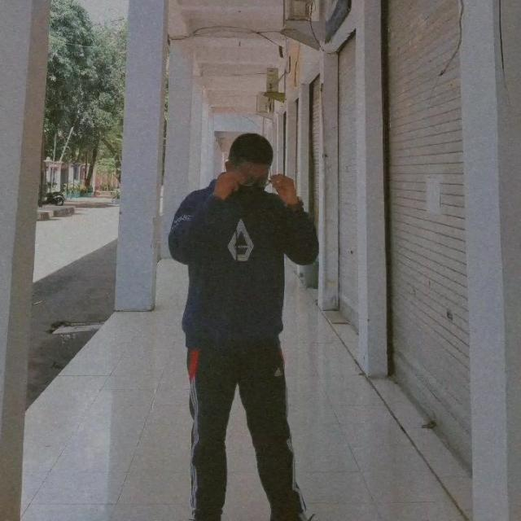

Radja Arrayan Wahab
What i do
Mulai dari hari pertama masuk ke SMK pada jurusan Sistem Informatika Jaringan dan Aplikasi, saya jadi sangat senang untuk membuat sebuah website dengan codingan. Bisa dibilang coding sudah menjadi salah satu hobi saya. Kadang kesel sih kalo error, tapi ada kepuasan tersendiri ketika kita bisa membetulkan error tersebut dan akhirnya berjalan sesuai keinginan kita.

Frontend Developer
Frontend Developer adalah orang yang berperan mengembangkan tampilan sebuah website atau aplikasi melalui HTML, CSS, dan JavaScript.

Version Control
Version Control adalah sebuah sistem yang mencatat setiap perubahan terhadap sebuah berkas sehingga pada suatu saat anda dapat kembali kepada berkas tersebut.

Automated Deployment
Deployment adalah kegiatan yang bertujuan untuk menyebarkan aplikasi yang telah dikerjakan oleh para orang-orang yang ahli di bidang programmer.
Found Me on